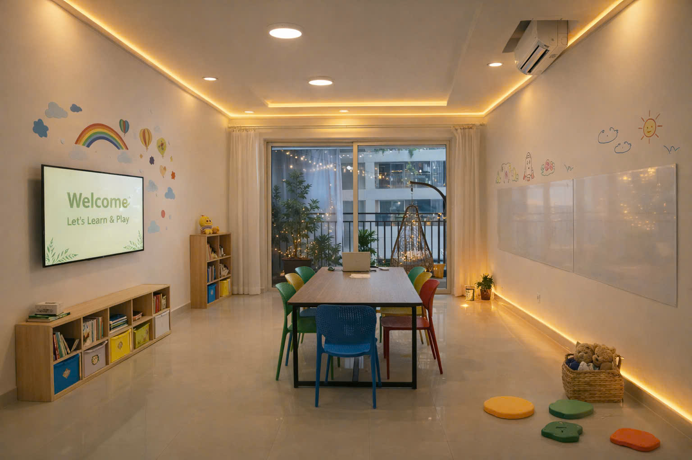

Teacher Bek · English for ages 5–17 · Phú Nhuận, Ho Chi Minh City
English makes sense when someone tells you why.
I teach children and teenagers. This page follows one of them, from five to seventeen.
grab the why and pull it →
Age 6
At six, English arrives like this.
- A table.
- Then another one.
- Learn it by Friday.
- Nobody mentions what it’s for.
Things to memorise0
“Okay. Tell me one sentence about your dog.”
A six-year-old who knows every row of that table, reaching for Vietnamese to find the words
The student tries to find the words, switching between English and Vietnamese: my dog is… ờ… nó… is… big?… cái đó tiếng Anh là gì ta… and the sentence never comes.
Age 9 · In speaking tests I ask one easy question
Tell me about your week.
Taken out of the bag 0 / 5
A composite of answers I hear, not one student’s words. About eight in ten of my students tell me some version of this. That is not research; it is what I hear in my own classroom.
So I don’t add to the bag. I take something out.
Age 11 · Here is a rule
Correct. Also useless to an eleven-year-old.
Use a before singular countable nouns. Use the for specific nouns.
a means one of many. I haven’t told you which.
the means you already know which one I mean.
pick a dog. any dog.
Age 12
Once the why lands, they start guessing. Good.
Yesterday I to school.
Drag a word into the gap, or tap one.
We don’t re-read lists. We play them back.
Age 14
Same task. Three students. Three ways in.
The task: Describe your room.
keep scrolling →
The one who draws
Draw it badly. Then tell me everything I’d get wrong about it.
The quiet one
Write three true things and one lie. I’ll try to catch the lie.
- My bed is blue.
- I have a cat.
- I sleep on the ceiling.
- My window faces east.
The one who has to win
Ten seconds. I’m counting your words. Go.
0 words
Age 15
Two sentences that look almost the same.
I lost my key.
A finished story. It happened then, and that’s all.
I’ve lost my key.
Still lost, right now. I can’t get in.
have is the why: you still have the result now. The past, carried into the present.
Age 17 · Same question, eight years later
Tell me about your week.
Honestly? It was a lot. But I’ve started climbing. I’m terrible at it, and I love it.
A composite. Every part of it is something a student has said to me.
About
I’m Bek.
I teach English in Ho Chi Minh City. Four years, about 2,500 students, TESOL and PGCE. My small groups meet in my own classroom in Phú Nhuận.
- oneLearning should feel like play, not like one more task.
- twoEvery piece of language exists for a reason. I teach the reason first.
- threeThe same lesson should reach different students in different ways.
Learn this way, around one long table in Phú Nhuận.

This is the room. Small groups, twice a week, ninety minutes with a break in the middle. The first week is free, so you can see how it feels before deciding anything.
- Young Learnersages 5–10
- Teensages 11–17
- Weekdays19:30–21:00
- Weekends14:00–20:00
- WhereGolden Mansion 1, 119 Phổ Quang